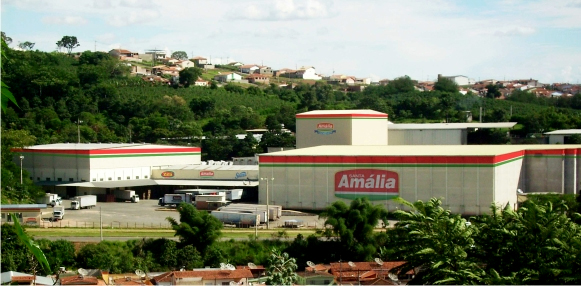

Soluções para empresas
Transporte corporativo planejado para a sua operação.
Rotas, horários e veículos definidos conforme a necessidade da empresa, com atendimento próximo, pontualidade e compromisso diário.
Fretamento empresarial
Mais organização para quem trabalha e para quem administra.
A DGS Viagens estrutura o transporte de colaboradores de acordo com a rotina de cada contratante. O serviço pode atender trajetos fixos, turnos, unidades industriais, eventos corporativos, treinamentos e deslocamentos especiais.
- Levantamento de rota e pontos de embarque
- Horários alinhados aos turnos da empresa
- Transporte diário ou sob demanda
- Atendimento para eventos e viagens corporativas
- Proposta personalizada conforme a operação

Experiência regional
Empresas atendidas pela DGS Viagens
Relacionamentos construídos com responsabilidade, flexibilidade e atenção às necessidades de cada operação.
Paulineris — Unidade Alfenas
Atendimento corporativo com foco em organização de rotas, pontualidade e transporte seguro de colaboradores.

Santa Amália — Grupo Camil
Atendimento à unidade de Machado/MG, com solução de transporte alinhada à rotina e às necessidades da empresa.
Terra de Cultivo
Empresa do Grupo Penha dedicada à compostagem de resíduos industriais, vegetais e animais, localizada na BR-267, km 16, em Machado/MG.
Etapas do atendimento
Uma proposta construída com base na sua realidade
Entendimento
Mapeamos turnos, passageiros, pontos e frequência.
Planejamento
Definimos rota, horários e veículo mais adequado.
Proposta
Apresentamos condições claras para a operação.
Execução
Iniciamos o atendimento com acompanhamento próximo.